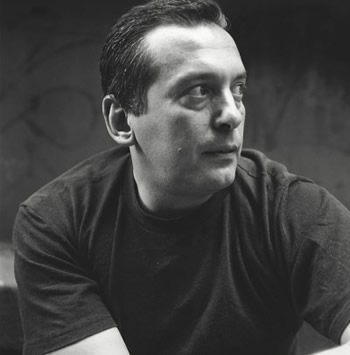

"...there is not a more important writer working in Australia today."
Martin Shaw, Books + Publishing
"Tsiolkas is better than anyone else writing in Australia today at thinking about the affective pull and the sharp edges of communities: ethnicity, family, friendship, class, nation."
Julianne Lamond, Syndey Review of Books
"Tsiolkas is a master chronicler of the zeitgeist."
Mary Kostakidis, The Guardian